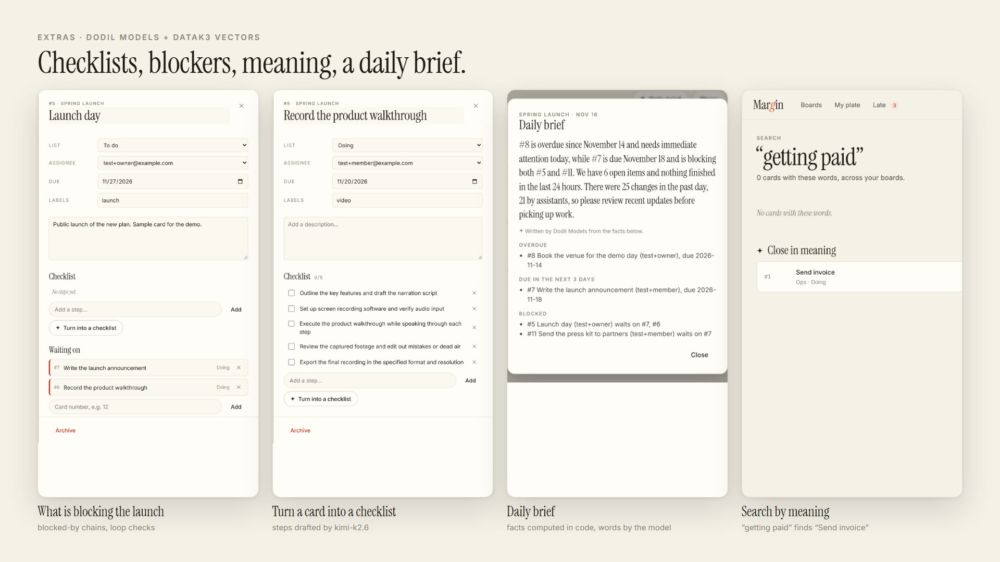
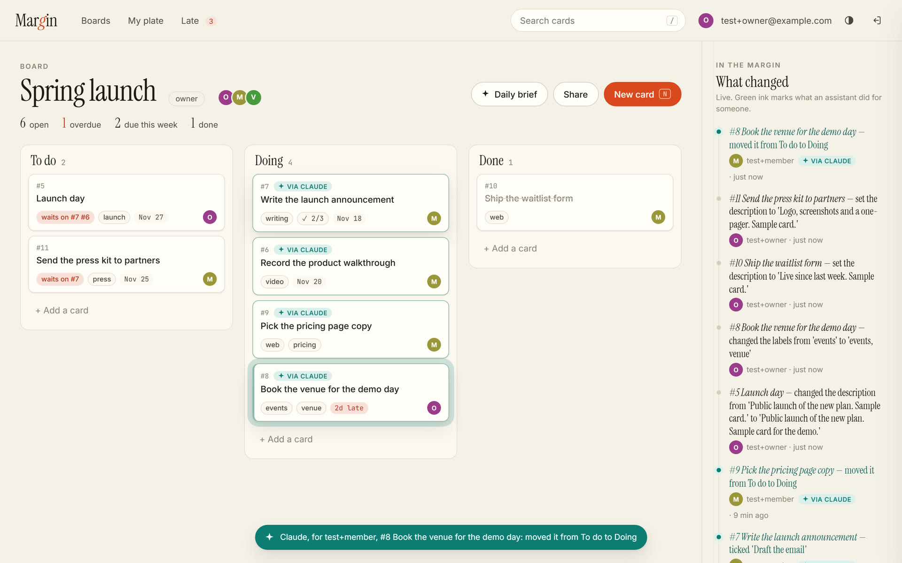
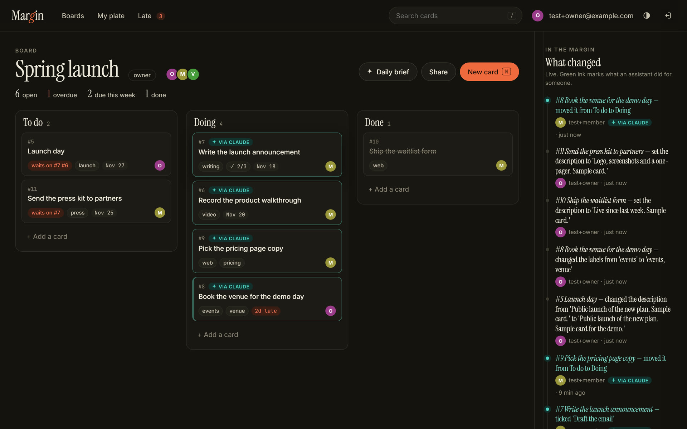

Case study · 2026
Margin: a team board your AI assistant can work on.
Margin is a team task board that people use on the web or through Claude and ChatGPT (MCP). Every change is recorded with who, when, what changed and whether a person or their assistant did it.
- Type
- Full-stack web app + AI assistant integration (MCP)
- Role
- Solo: product, design, back end, front end, tests, deployment
- Year
- 2026
- Stack
- Python 3.12, FastAPI, Postgres-compatible DB with vector search, OAuth, MCP, JavaScript, CI/CD

The problem
Teams now let AI assistants change their work tools, but most task boards can't tell you which changes a person made and which their assistant made, and they give the assistant either too much access or none.
The solution
Margin is a team task board you can run from the web page or straight from Claude or ChatGPT. Ask "what's on my plate this week?", "move card 12 to Done" or "what is blocking the launch?" and the assistant does it, acting as you and seeing only your boards.
Every change records who, when, what changed (old and new value) and through which door: the web page or an assistant, with the assistant's name. Anything an assistant does glides into place live on the board, glows, and carries a "via Claude" mark.

Features
- Team roles: owner, member, viewer. Only the owner manages people; viewers read only. Boards you are not on are invisible, on the web and to the assistant.
- Boards with To do / Doing / Done; cards with title, description, assignee, due date, labels, checklist and short card numbers. Drag and drop with mouse, pen or touch; order is saved.
- Full card history and board activity log.
- One MCP endpoint with 27 action tools (move, assign, update, block, search, summarize...), so Claude and ChatGPT work on the board through real actions, never raw database access.
- AI features: turn a card into a checklist, a daily brief per board, search by meaning ("how do we get paid?" finds "Send invoice"), "find similar cards" with vector embeddings.
- "Blocked by" chains with loop checks: "what is blocking the launch?" answers down the whole chain.
- Overdue flags everywhere; "my cards" split into overdue, this week, later.
- Light and dark themes, phone layout, keyboard shortcuts, reduced-motion support, live updates.

How it's built
- Python 3.12 + FastAPI with Domain-Driven Design (domain / application / infrastructure). The web routes and the MCP tools call the same use cases, so every rule is written once and holds for both.
- 51 automated tests covering the role and board rules.
- OAuth sign-in with PKCE and dynamic client registration, so Claude.ai and ChatGPT connect as the signed-in person.
- Postgres-compatible database with
VECTOR(2048)columns and cosine nearest-neighbour search; embeddings and chat from hosted AI models. - CI pipeline that tests, builds and deploys on every push; one-command "remix" lets anyone copy the whole app (code, database, sign-in, deployment) into their own account.
- Front end in plain JavaScript and CSS (no build step), with its own editorial design: drag with lift and tilt, animated card moves and toasts.
- README and design notes in the repository.

More screens



Let's talk
Need a system like this for your business?
Send me a few lines about what you want to build. Write in English or Arabic.